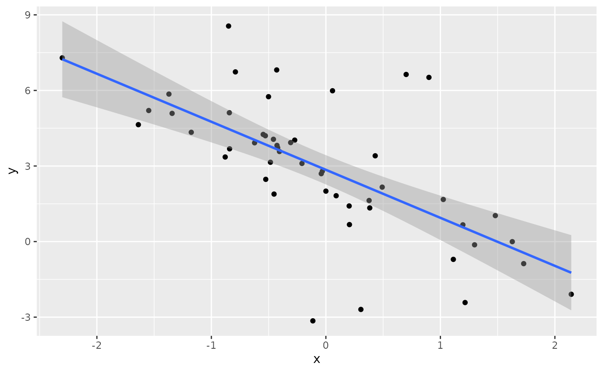
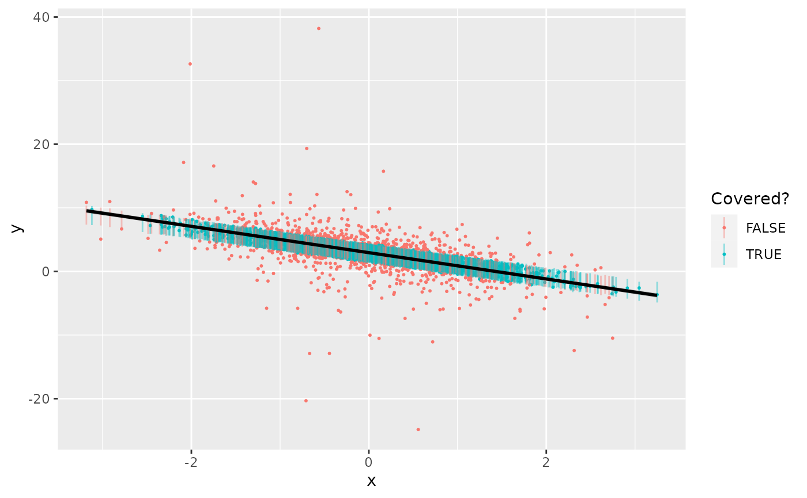
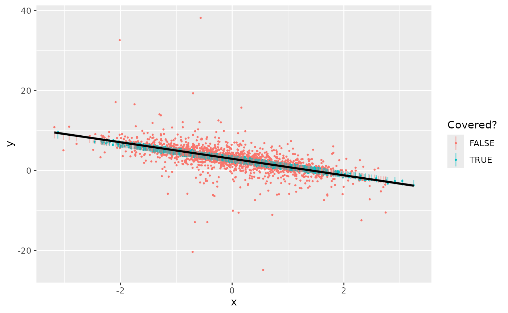

The conformalbayes package provides functions to construct finite-sample calibrated predictive intervals for Bayesian models, following the approach in Barber et al. (2021). The basic idea is a natural one: use cross-validated residuals to estimate how large predictive intervals need to be, on average.
Suppose we have a heavy-tailed dataset.
library(conformalbayes)
library(rstanarm)
library(ggplot2)
sim_data = function(n=50) {
x = rnorm(n)
y = 3 - 2*x + rt(n, df=2)
data.frame(x=x, y=y)
}
d_fit = sim_data()
ggplot(d_fit, aes(x, y)) +
geom_point() +
geom_smooth(method=lm, formula=y~x)
We can fit a linear regression to the data, but it won’t give us accurate uncertainty quantification in our predictions.
# fit the model
m = stan_glm(y ~ x, data=d_fit, chains=1, refresh=0)
d_test = sim_data(2000)
interv_model = predictive_interval(m, newdata=d_test, prob=0.50)
# are the points covered
covered_model = with(d_test, interv_model[, 1] <= y & y <= interv_model[, 2])
ggplot(d_test, aes(x, y, color=covered_model, group=1)) +
geom_point(size=0.4) +
geom_linerange(aes(ymin=interv_model[, 1],
ymax=interv_model[, 2]), alpha=0.4) +
labs(color="Covered?") +
geom_smooth(method=lm, formula=y~x, color="black")
In fact, the 50% intervals over-cover, with a coverage rate of 69.8%, since the fat tails of the error terms pulls the estimate of the residual standard deviation too high.
While a posterior predictive check could uncover this discrepancy, leading us to fit a more flexible model, we can take another approach instead. The first step is to call loo_conformal(), which computes leave-one-out cross-validation weights and residuals for use in generating more accurate predictive intervals.
m = loo_conformal(m)
print(m)
#> stan_glm
#> family: gaussian [identity]
#> formula: y ~ x
#> observations: 50
#> predictors: 2
#> ------
#> Median MAD_SD
#> (Intercept) 2.9 0.3
#> x -1.9 0.3
#>
#> Auxiliary parameter(s):
#> Median MAD_SD
#> sigma 2.1 0.2
#>
#> ------
#> * For help interpreting the printed output see ?print.stanreg
#> * For info on the priors used see ?prior_summary.stanreg
#> (conformalbayes enabled, with estimated CI inflation factor 0.81)The loo_conformal() returns the same fitted model, just with a thin wrapping layer that contains the leave-one-out cross-validation information. You can see at the bottom of the output that conformalbayes estimates that correctly-sized predictive intervals are only 81% of the size of the model-based predictive intervals.
To actually generate predictive intervals, we use predictive_interval(), just like normal:
interv_jack = predictive_interval(m, newdata=d_test, prob=0.50)
# are the points covered
covered_jack = with(d_test, interv_jack[, 1] <= y & y <= interv_jack[, 2])
ggplot(d_test, aes(x, y, color=covered_jack, group=1)) +
geom_point(size=0.4) +
geom_linerange(aes(ymin=interv_jack[, 1],
ymax=interv_jack[, 2]), alpha=0.4) +
labs(color="Covered?") +
geom_smooth(method=lm, formula=y~x, color="black")
Indeed, the coverage rate for these jackknife conformal intervals is 49.2%, as we would expect.
The conformal version of predictive_interval() does contain two extra options: plus and local. When plus=TRUE, the function will generate jackknife+ intervals, which have a theoretical coverage guarantee. These can be computationally intensive, so by default they are only generated when the number of fit and prediction data points is less than 500. In practice, non-plus jackknife intervals generally perform just as well as jackknife+ intervals. When local=TRUE (the default), the function will generate intervals whose widths are proportional to the underlying model-based predictive intervals. So if your model accounts for heteroskedasticity, or produces narrow intervals in areas of covariate space with many observations (like a linear model), local=TRUE will produce more sensible intervals. The overall conformal performance guarantees are unaffected.
Citations
Barber, R. F., Candes, E. J., Ramdas, A., & Tibshirani, R. J. (2021). Predictive inference with the jackknife+. The Annals of Statistics, 49(1), 486-507.
Lei, J., G’Sell, M., Rinaldo, A., Tibshirani, R. J., & Wasserman, L. (2018). Distribution-free predictive inference for regression. Journal of the American Statistical Association, 113(523), 1094-1111.